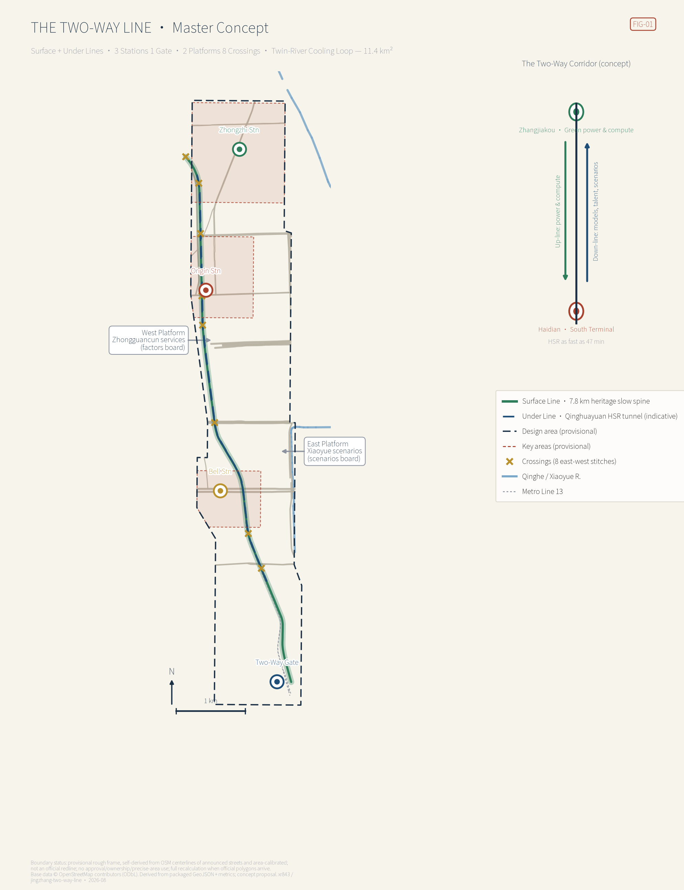
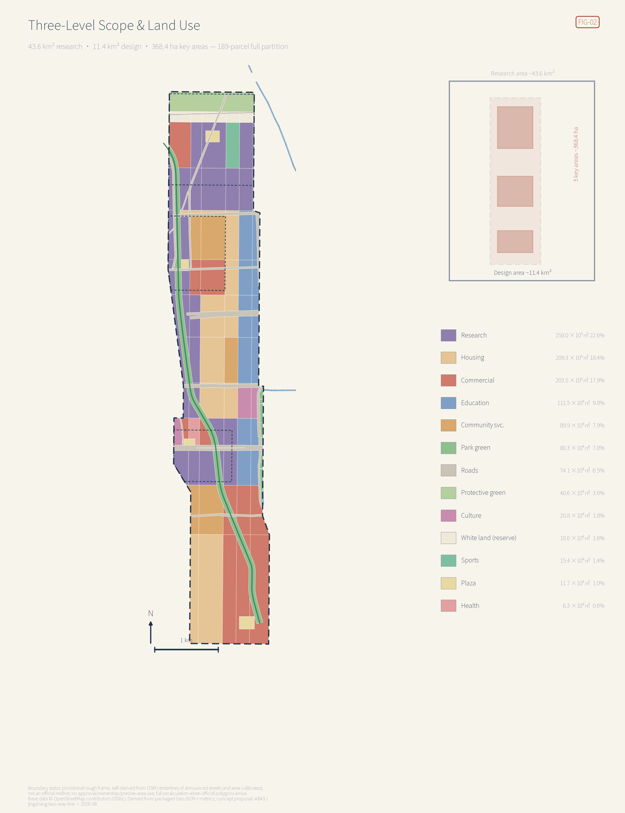
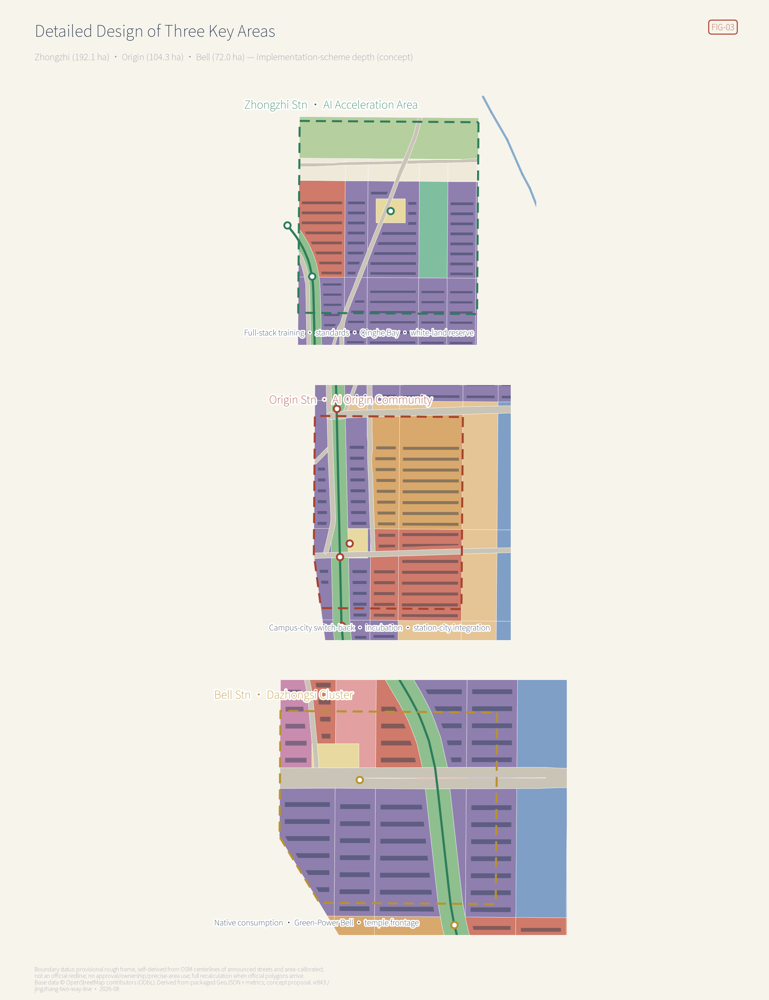
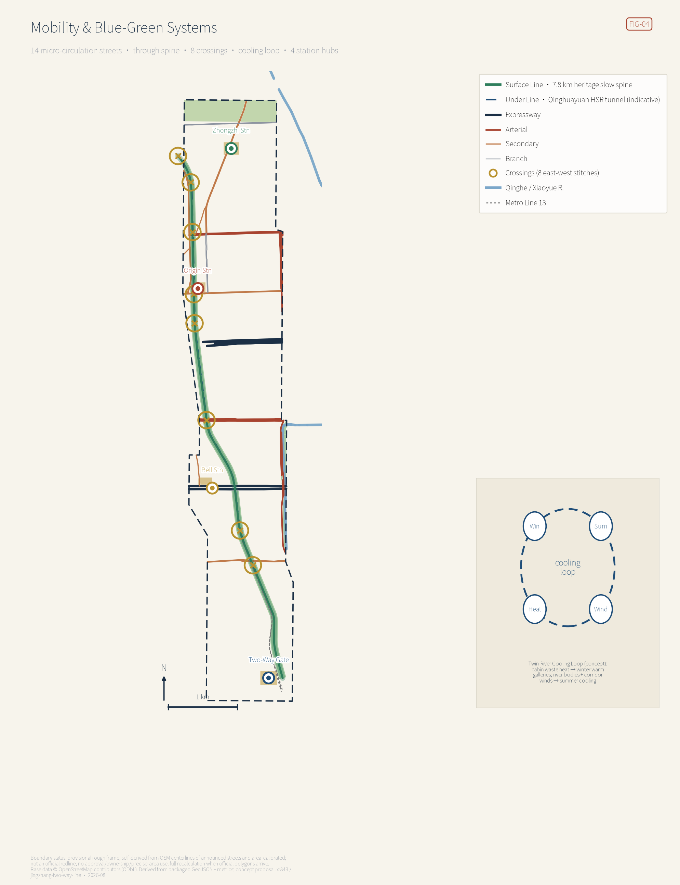

The Two-Way Protocol can be checked on the spot: the tabletop section on this page runs the packaged rule engine live — 12/12 service cards pass the six rules, 6/6 malformed services are caught by their matching rule, and you can break a gate yourself. The same verdict is reproducible in a terminal with node visual/assets/run_twoway_tabletop.js.
Green power and compute at the Zhangjiakou end (the national East-Data-West-Compute Beijing–Tianjin–Hebei cluster plus the country's only national renewable-energy demonstration zone); models, talent and scenarios at the Haidian end; 47 minutes apart by rail — and not one place in the city yet expresses that 200-km relationship. This proposal reads the overall design scope as the corridor's southern terminal district, turning "two-way" into space you can walk into and a rule you can execute.
7.83 kmSurface Line greenway, made continuous
8crossings stitching east to west
12service cards bound by the protocol
32 / 4metrics known / unknown
⚠ Provisional boundary: all geometry sits on a self-derived, street-aligned provisional frame calibrated to announced areas — not an official redline; no approval, ownership, or precise-area use; full recalculation when official polygons arrive. Everything is an open co-creation concept, not statutory planning.
Overview Map总览地图
A double-deck corridor: the 7.8-km Surface Line above, the HSR Under Line below; three stations, one gate, two platforms, eight crossings, and the twin-river cooling loop. Power and compute run up-line; models, talent, and scenarios run down-line.

FIG-01 · master concept, derived from packaged GeoJSON and metrics
Three-Level Scopes三层范围
Coordinated research area
≈43.6 km²
3 areas, 2 wings · corridor synergy
Overall design area (recomputed)
11,400,064 m²
+0.0006% vs announced 11.4 km²
Key areas total (recomputed)
3,683,997 m²
calibrated within ±0.01% of announced

FIG-02
Key Areas重点区域
Zhongzhi Station
1,921,023 m²
full-stack training & standards
Origin Station
1,042,981 m²
campus-city switch-back
Bell Station
719,993 m²
native consumption & data assets

FIG-03
Land-Use Partition用地分区
A 189-polygon full partition with a gap of about 658 m² (0.006%); covered area 11,399,407 m²。
Code
Class
Area (10⁴ m²)
%
0802
Research
258.0
22.6
0701
Housing
209.3
18.4
05
Commercial
203.5
17.9
0804
Education
111.5
9.8
0702
Community svc.
89.9
7.9
1401
Park green
80.3
7.0
1207
Roads
74.1
6.5
1402
Protective green
40.6
3.6
0803
Culture
20.8
1.8
16
White land
18.6
1.6
0805
Sports
15.4
1.4
1403
Plazas
11.7
1.0
0806
Health
6.3
0.6
Mobility & Slow Travel交通慢行
Street network
38,092 m
14 existing streets
Surface Line spine
7,830 m
through route
Crossings
8
east-west stitches
Road-area ratio
6.5%
existing redlines kept

FIG-04
Blue-Green & Public Space蓝绿公共空间
Green area
1,208,541 m²
one corridor, two rivers, one band
Green ratio
10.60%
provisional frame
Public space
198,606 m²
4 plazas + 8 crossings
Public-space ratio
1.74%
timetable-multiplied
Four pilgrimage landmarks: the Two-Way Gate, the Green-Power Bell (annual archive casting), the Milepost Walk (K0–K9 honor line), and the Qinghuayuan Second-Departure Hall. Six-piece component library: signboard, milepost, two-way screen, compute cabin, warm gallery, crossing deck.
Buildings & Renewal Volume建筑
Concept clusters
244
stations + renewal belts
Footprint
664,370 m²
coverage 5.8%
Concept floor area
5,890,267 m²
renewal-potential reference
FAR / max height
pending
official controls not yet published
Retain-renovate-demolish concept: retain heritage frontages, sound estates, campus cores; renovate Dazhongsi boxes, Origin courtyards, the Zhichun belt; demolish only unsafe or spine-blocking structures, pending surveys.
Renewal Projects更新项目
Fourteen projects in three phases: Phase I 1,768,805 m² · Phase II 2,496,922 m² · Phase III 1,693,110 m²。
Phase
Project
I
Spine through-route & eight crossings
I
Two-Way Gate plaza & arrival hall
I
Wudaokou plaza & release hall
I
Campus-city stitching units
I
Timetable & Protocol pilot
II
Qinghe Bay plaza & waterfront labs
II
Training & standards cluster
II
Green-Power Bell plaza & casting hall
II
Native consumption street renewal
II
Compute cabins & cooling-loop demo
III
Zhichun–4th-Ring housing renewal belt
III
Campus fusion on Xueyuan Rd
III
White-land reserve activation review
III
Milepost honor line & global nodes
AI ScenariosAI 场景
Twelve run-cards (three industry test-validation scenarios) on twelve nodes; the Two-Way Protocol pairs every up-line collection with a down-line public return, and every card names who can stop it.
Run
Scenario
Node
Up-line
Down-line
Review & exit
T1
Low-speed delivery corridor test
Qinghe Bay
de-identified ops data
free community delivery
on-site stop · delisting
T2
Traffic & walkability dispatch test
Zhichun/4th-Ring crossings
anonymous flows
published shorter waits
manual signal fallback
T3
Enterprise-copilot sandbox
Bell Station cluster
authorized tickets
free SME quota
human always switchable
S4
Multilingual cultural guide
Mileposts K0–K9
anonymous heat
4-language guiding
human content review
S5
Health-service navigation
Xueyuan Rd frontage
voluntary consultations
elder escort
physician review · burn
S6
Public-safety ops review
Gate arrival hall
incident data
published drills
post-hoc only
S7
Cabin waste-heat dispatch
cooling-loop demo
device telemetry
winter warm gallery
manual bypass
S8
Open-model release day
Qinghuayuan hall
registration
open model cards & weights
community review first
S9
Accessible walking agent
eight crossings
facility status
guidance for blind walkers
hotline backstop
S10
Campus conversion matching
Origin hall
licensed results
published shared returns
tech-manager review
S11
Micro-climate sensing
whole spine
sensors
heat warnings & shade
stoppable points
S12
Green-power chime
Bell plaza
green-power share
hourly chime
auditable source
Two-Way Protocol tabletop对开协议·桌面推演 — computed live, not pre-baked
The Two-Way Protocol is this proposal's admission condition for space: whether a public space can host an AI deployment depends on whether that service passes six rules. The tabletop below runs this package's own rule engine assets/twoway-rules.js in your browser against this package's timetable assets/twoway-runbook.js — the same rules and the same data as node assets/run_twoway_tabletop.js, so both must agree. You need not take this page's word for it; break a gate yourself.
Core Metrics核心指标
Site area m²
11,400,064
polygon_area_epsg4548(site_boundary)
Land-use coverage m²
11,399,407
area_epsg4548(union(land_use))
Green ratio
10.60%
green_space_area_sqm / site_area_sqm
Public-space ratio
1.74%
public_space_area_sqm / site_area_sqm
Scenario nodes
12
count(SCENARIO_NODE)
Scenario cards
12
count(scenario cards in proposal)
Test scenarios
3
count(industry test/validation scenario card
Personas
7
count(user personas in proposal)
Landmarks
4
count(AI pilgrimage landmarks)
Global cases
7
count(global ecosystem case studies)
Renewal projects
14
count(renewal project list)
Key areas
3
count(key_areas)
Pending official data: FAR, max building height, AI-innovation-index baseline, talent-density baseline (reasons and formulas in metrics.json; never faked).
Task Coverage任务覆盖
All 23 requirements of announcement 1.3/1.4/1.5 and agent.1–agent.6 map to sections, layers, metrics, drawings, and self-checks: